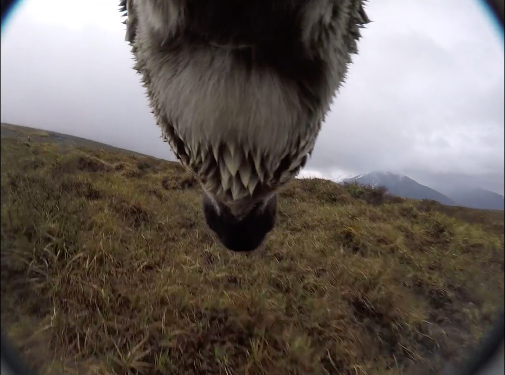
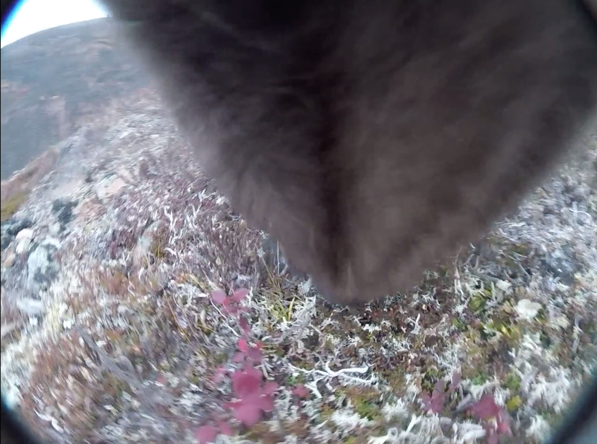
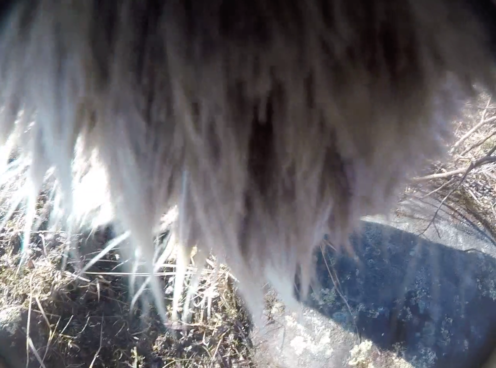

Tutorial
How to distinguish the quality of the video?
- EXCELLENT – excellent image
- FAIR to GOOD – most clips fall into this category; allows easy observation, partial to no camera lens obstruction
- POOR – some data can be collected but the images is problematic
- EXTERMELY OBSTRUCTTED – the image is obstructed the entire time (often by the chin or fur while eating) and none of the vegetation present can seen
For Example:

EXCELLENT

FAIR to GOOD

POOR
EXTERMELY OBSTRUCTTED